PROCESS STUDIO 사용 설명서
팀이 함께 쓰는 전술 스튜디오 — 작전판·훈련 설계·일정·선수단·개인 성장(IDP)·노트가 한 곳에.
이 책은 코치가 쓰는 법(1부), 선수가 쓰는 법(2부), 팀이 함께 쓰는 법(3부)으로 나뉩니다.
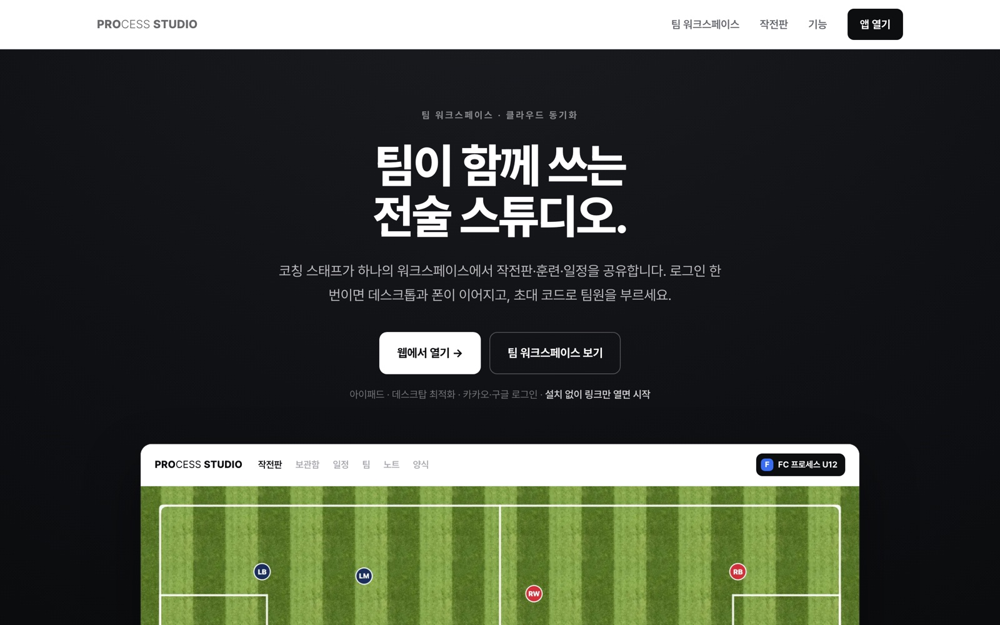
이 책을 읽는 법
- 코치라면 — 0부(시작하기)를 훑고 1부를 처음부터 읽으세요. 작전판 → 훈련 설계 → 일정 순서가 실제 업무 흐름과 같습니다.
- 선수라면 — 0부에서 로그인·설치만 확인하고 바로 2부(IDP)로 가세요. 로그인·팀 없이도 전부 쓸 수 있습니다.
- 팀을 운영한다면 — 3부의 워크스페이스 장을 먼저 읽고 초대 코드를 만드세요. 나머지는 각자 자기 편을 읽으면 됩니다.
- 본문의 [대괄호]는 화면의 실제 버튼 이름입니다. 키보드 표기는 단축키입니다.
목차
- 0부 시작하기 — 설치, 로그인, 백업, 설정
- 1부 코치 편 — 1장 작전판 · 2장 경기와 미팅 · 3장 훈련 설계 · 4장 보관함과 양식 · 5장 팀 일정 · 6장 선수단과 스카우트 · 7장 게임모델과 공용어
- 2부 선수 편(IDP) — 8장 시작 3단계 · 9장 개인 훈련과 일지 · 10장 이미지노트 · 11장 리포트
- 3부 팀 편 — 12장 팀 워크스페이스 · 13장 커뮤니티 · 14장 노트와 메모 · 15장 한 주 루틴 예시
- 부록 — A 양식 26종 · B 제스처 모음 · C 문제 해결
0부 시작하기
0-1. 설치 없이 링크로
PROCESS STUDIO는 웹앱입니다. 주소만 열면 어느 기기에서든 바로 시작됩니다. 아이패드·데스크톱에 최적화되어 있고, 폰에서는 하단 탭바가 있는 모바일 화면으로 자동 전환됩니다.
앱처럼 쓰고 싶다면 설치하세요(오프라인에서도 열립니다):
| 기기 | 방법 |
|---|---|
| 맥·데스크톱 (Chrome/Edge) | 주소창 오른쪽 설치 아이콘 클릭. 없으면 ⋮ 메뉴 → 앱 설치 |
| 맥 (Safari) | 공유 버튼 → Dock에 추가 |
| 아이폰·아이패드 (Safari) | 공유 버튼 → 홈 화면에 추가 → 추가 |
| 안드로이드 (Chrome) | ⋮ 메뉴 → 앱 설치 또는 홈 화면에 추가 |
앱 안에서도 설치할 수 있습니다 — 상단에 [설치] 버튼이 보이면 누르세요. 설치가 안 보이면 새로고침하거나 잠깐 사용한 뒤 다시 확인하세요.
태블릿은 가로로. 태블릿을 세로로 들면 "가로 모드로 사용해 주세요" 안내가 뜹니다. 기기를 돌리면 계속됩니다.
0-2. 데이터는 어디에 저장되나
모든 데이터는 먼저 이 기기(브라우저)에 저장됩니다. 인터넷이 없어도 작전판·일정·노트를 열고 편집할 수 있고, 연결되면 자동으로 동기화됩니다.
- 비로그인 + 미설치 상태로 오래 안 열면 브라우저가 저장소를 비울 수 있습니다. 데이터가 쌓이면 "지금은 이 기기에만 저장돼요" 배너가 뜨니, [안전하게 저장]을 눌러 설치하거나 로그인하세요. 지금까지 쓴 내용은 로그인해도 그대로 넘어갑니다.
- 저장 공간이 가득 차면 빨간 경고가 뜹니다. 먼저 설정 → 백업 → 내보내기를 하고, 저장 공간 → 안전 정리를 누르세요. IndexedDB에 같은 내용이 확인된 중복 사본만 정리하며 실제 기록은 삭제하지 않습니다.
- 팀 워크스페이스에서도 새 보관함 항목은 먼저 내 기기에 저장됩니다. 팀원에게 보여줄 때만 카드의 더보기 → 팀 스페이스에 공유를 누르세요.
0-3. 로그인과 동기화
상단 오른쪽 [로그인]을 누르면 계정 패널이 열립니다.
- [카카오로 계속] / [Google로 계속] — 둘 중 편한 것으로.
- 로그인하면 작전판·보관함·팀 자료가 여러 기기에서 자동 동기화됩니다. 동기화는 앱을 열 때, 3분마다, 앱을 나갔다 돌아올 때, 오프라인에서 온라인으로 복귀할 때, 편집 후 4초 뒤에 자동으로 일어납니다. 급하면 계정 패널의 [지금 동기화].
- 로그인 도중 시간이 지나거나 다른 탭에서 먼저 완료되면 “로그인 연결 시간이 지났어요” 안내가 뜹니다. 작업은 이 기기에 그대로 있으니 Google 또는 카카오 로그인을 다시 누르면 됩니다.
- [표시 이름 설정] — 작전판·보관함에 "만든 사람"으로 표시될 이름입니다.
0-4. 설정 기어 ⚙
상단 오른쪽 톱니를 누르면 설정이 열립니다.
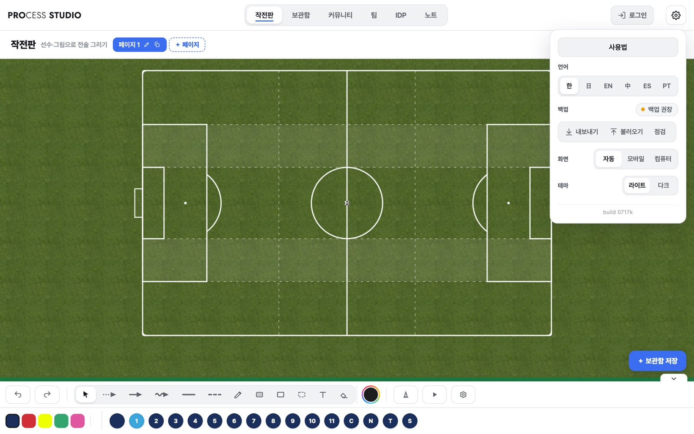
- [사용법] — 앱 내장 가이드(8개 절, 한/일/영).
- [언어] — 한국어·日本語·EN·中文·ES·PT 6개 언어.
- [백업] — [내보내기]: 전체 데이터를 JSON 한 파일로 다운로드. [불러오기]: 백업 파일 복원(기존 데이터에 합쳐짐). [점검]: 저장 무결성 확인. 백업이 오래되면 상단에 노란 배너로 알려줍니다 — 주 1회 내보내기를 습관으로.
- [화면] — 자동/모바일/컴퓨터 레이아웃 강제.
- [테마] — 라이트/다크. 다크는 야간 미팅·버스 이동 중에 좋습니다.
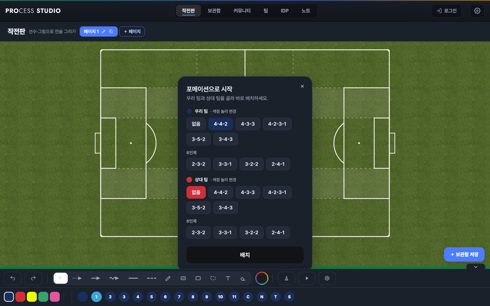
0-5. 자동 업데이트
새 버전이 나오면 설정 기어 왼쪽에 파란 [다시 시작] 버튼이 나타납니다. 누르면 최신 버전으로 재시작합니다. 작업 중이 아닐 때 눌러 주세요.
1부 코치 편
1장 작전판 — 전술을 그리는 곳
앱을 열면 항상 작전판입니다. 선수 칩을 놓고, 화살표를 그리고, 장면을 애니메이션으로 만들고, 이미지·영상으로 내보내는 코치의 메인 도구입니다.
1-1. 첫 5분: 포메이션으로 시작
빈 작전판에는 "포메이션으로 시작" 카드가 떠 있습니다.
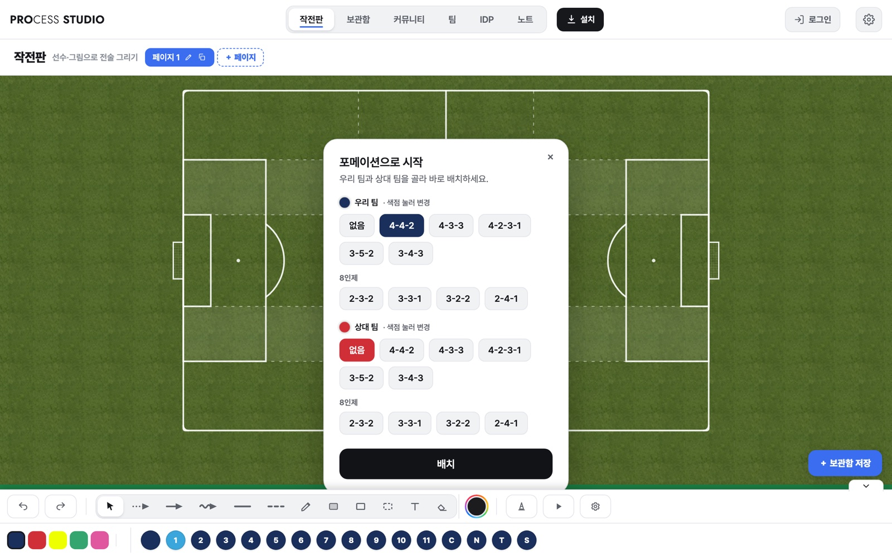
- 우리 팀에서 4-4-2, 4-3-3, 4-2-3-1, 3-5-2, 3-4-3 중 선택. 유소년이라면 8인제(2-3-2, 3-3-1, 3-2-2, 2-4-1)도 있습니다.
- 상대 팀도 필요하면 선택(기본 '없음'). 각 팀 이름 옆 색점을 누르면 팀 색을 바꿉니다.
- [배치] — 선수들이 포메이션대로 올라옵니다.
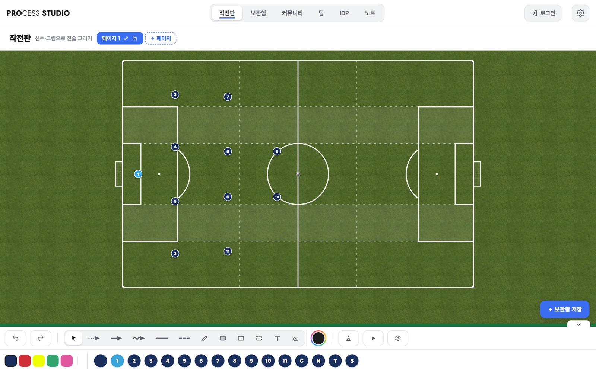
나중에 포메이션을 바꾸려면 [더보기 ▾] → 포메이션에서 우리/상대를 각각 선택하세요(백4 5종, 백3 3종, 8인제 4종).
1-2. 선수·공·장비 다루기
- 배치 — 하단 벤치( [선수 ▾] )에서 번호 칩(1~11)이나 C(코치)·N·T·S 칩, 장비 아이콘을 끌어서 필드에 놓습니다.
- 이동 — 데스크톱은 바로 드래그, 모바일은 길게 눌러(0.3초) 이동합니다(스크롤과 충돌 방지).
- 선택 — 탭 한 번. 더블탭하면 선택 + 이름 입력창이 바로 열립니다. Shift/⌘ + 탭으로 여러 개 선택.
- 삭제 — 선택 후 Delete, 또는 지우개 도구로 탭.
토큰을 선택하면 컨트롤 바가 뜹니다:
| 버튼 | 하는 일 |
|---|---|
| 번호·이름 입력 | 등번호(3자)·이름(10자) |
| 크기 −/＋, 회전 ↺/↻ | 이 토큰만 조절 |
| 색상 | 유니폼 색 변경, [팀 색으로 되돌리기] |
| [GK] | 골키퍼 색으로 전환 |
| [시야] | 선수 시야 부채꼴 표시 — ◂▸로 넓이, ↺↻로 방향. [사각]은 등 뒤 사각지대 |
| [쉐이퍼] | 몸 방향이 보이는 토큰 디자인 |
| [복제] [좌우] [상하] | 복제·대칭 복제 |
| [공 바꾸기] | (공 선택 시) 공 디자인 선택 |
여러 개를 선택하면 정렬 바가 나타납니다 — 가로/세로 정렬, 간격 균등, 선택 복제·삭제를 한 번에.
팀 색 바꾸기 — 벤치의 팀 칩(파랑·빨강·노랑·초록·핑크)을 한 번 더 탭하면 색·패턴을 바꿉니다. [기본색으로]로 초기화. [장비] 칩으로 콘·미니골 등 장비 팔레트로 전환하고, 사진 업로드(PNG)로 내 장비 이미지를 등록할 수도 있습니다.
1-3. 그리기 도구
[그리기 ▾]를 열면 도구가 나옵니다.
| 도구 | 용도 |
|---|---|
| 이동·선택 | 기본 도구 |
| 점선 화살표 | 선수 이동(오프더볼 런) |
| 직선 화살표 | 패스 |
| 물결 화살표 | 드리블 |
| 직선 / 점선 | 라인 |
| 자유선 | 펜 |
| 구역 | 반투명 채운 영역 |
| 사각형(실선/점선) | 테두리 박스 |
| 텍스트 | 입력창에 쓰고 필드를 탭 |
| 지우개 | 탭·드래그로 삭제 |
- 화살표를 그린 뒤 가운데 점을 끌면 곡선, 더블탭하면 직선으로 돌아옵니다.
- 도형은 모서리를 끌어 크기, 테두리를 끌어 이동.
- 색은 [펜 색] 스와치에서. 실수하면 [되돌리기](⌘Z)·[다시 실행].
1-4. 보기 메뉴 — 피치를 내 취향으로
[보기 ▾]:
- 선수 모양 — 유니폼 / 원형 / 쉐이퍼(몸 방향).
- 피치 — 잔디·실사·딥그린·네이비·화이트·훈련(모눈) + 색 직접 선택.
- 그리드 — 끄기·5레인·격자·20존·삼등분·15존 (전술 그리드 프리셋: 전체·채널·1/3·존·15존).
- 표시 — 토큰 라벨을 포지션/번호/없음으로. 라인 표시/숨김.
- 크기 −/＋/기본 — 전체 토큰 크기 일괄 조절.
1-5. 페이지와 멀티피치
- 제목 옆 페이지 탭 — 작전판을 여러 독립 페이지로 관리합니다. [＋ 페이지] 추가, 탭에서 이름 변경·복제·삭제, 끌어서 순서 이동.
- 멀티피치 — 한 화면에 운동장을 1~3개 배치할 수 있습니다(훈련 스테이션 구성에 유용). 피치 방향(가로/세로·풀/반코트)은 화면 비율에 맞춰 자동 선택됩니다.
1-6. 화이트보드
[화이트보드] 토글을 누르면 운동장이 화이트보드로 바뀝니다 — 펜·직선·화살표·텍스트·지우개, 검정·빨강·파랑·초록. 전술 외 설명(규칙, 대형 스케치)을 적을 때 쓰고 [×]로 운동장으로 돌아옵니다.
1-7. 애니메이션 — 장면을 움직임으로
[▶ 애니메이션]을 켜면 현재 배치가 장면 1로 등록됩니다.
- 선수·공을 다음 위치로 옮기고 [＋ 장면] — 장면 2 추가. 반복해서 시퀀스를 만듭니다.
- [↻] — 현재 화면으로 선택한 장면을 갱신. [겹침] — 이전 장면을 반투명하게 겹쳐 보며 조정(어니언스킨).
- [▶] 재생, [반복] 루프, 속도 0.5×~2×.
내보내기 — [영상 저장](MP4/webm, 장면 2개 이상), [GIF](채팅방에서 자동재생 루프, 약 20초 이내), 그리고 장면들을 슬라이드로 만드는 PPT 내보내기(PROCESS-STUDIO.pptx)까지. 정지 화면은 [이미지로 내보내기]로 고해상도 PNG 저장.
1-8. 선수단 연동
- [더보기 ▾] → [팀 선수 불러오기] — 팀 탭에 등록한 선수단을 포지션대로 작전판에 배치합니다. 부상·휴식 선수는 자동 제외("훈련 가능 N명 배치 · 부상·휴식 M명 제외").
- [선수단 (등록·수정)] — 간이 선수단 매니저(번호·이름·포지션·주발)를 열어 편집 후 [작전판에 적용 ▶].
- [명단 (이름·번호)] — 필드 옆 명단 패널. 경기 모드에서는 명단에서 끌어서 투입, 필드 밖 명단으로 끌어내면 제외됩니다.
2장 경기와 미팅 — 작전판의 두 가지 모드
작전판 상단 모드 탭으로 보기 / 경기 / 미팅을 전환합니다.
2-1. 경기 모드 — 전광판과 벤치 운영
사이드라인에서 아이패드를 들고 쓰는 모드입니다. 화면이 꺼지지 않게 유지됩니다.
- 전광판(스코어보드) — 팀명 클릭해 변경, 점수 박스 클릭 = +1, 박스 안 [−] = 취소.
- 시간 버튼 — 클릭 = 시작/정지. ⚙ 설정에서 [전·후반 전환], [리셋], 하프 분(기본 45) 조절.
- [득점 기록] — "전반 12′ 우리" 형식으로 쌓이고 [복사]해서 단톡방에 붙여넣기.
- [중계캠/평면] — 원근 중계 화면 ↔ 평면 전술 화면 전환.
- 경기 메모 — 전술 포인트·교체·관찰 기록.
2-2. 미팅 모드 — 선수단 앞 발표
키노트처럼 상황별 장면을 넘기며 발표합니다.
- 그룹: [게임 플랜](우리 팀) / [상대 분석](상대 이름 입력 → 작전판에 표시).
- [＋ 분류 추가] — 주제(빌드업, 세트피스 수비 등). 상대 분석에는 [＋ 기본 분류 (공격·수비·전환·세트피스)] 원클릭.
- 분류마다 [＋ 상황(장면)](애니메이션) 또는 [＋ 화면(정지)](지금 배치를 정지 화면으로). 각 상황에 장면 스트립·메모("강점·약점·핵심 선수")를 붙이고 [▶ 재생]으로 발표.
- 끝나면 [⨯ 미팅 종료].
3장 훈련 설계 — 드릴에서 세션까지
3-1. 드릴 만들기
훈련 설계의 단위는 드릴(훈련 카드)입니다. 보관함/세션 화면의 [＋ 훈련 만들기]:
- [빈 작전판에서 그리기] — 새로 그린다.
- [작전판 장면 가져오기] — 지금 작전판 배치를 그대로 드릴로.
드릴 편집 모달에서:
- 왼쪽은 작전판 캔버스. 훈련 탭 스트립으로 한 카드에 여러 훈련을(추가·복제·드래그 정렬), 장면 탭으로 훈련마다 움직임 장면을 쌓습니다.
- 오른쪽에 날짜·시간·인원, 훈련 제목, 분 × 세트, 국면(분류), 강도(RPE 1~10) 슬라이더, 그리고 목적·방법·규칙·코칭 포인트 항목([＋ 항목 추가]로 양식 자체를 커스텀).
- 세트피스 드릴이면 코너↗/코너↘/프리킥/스로인 배치 도구와 [＋ 볼], 존/맨 마킹 표시가 추가됩니다.
3-2. 세션 짜기
드릴을 쌓으면 오늘 세션이 됩니다.
- 빠른 추가 — "드릴 이름 입력 후 Enter"로 블록을 즉시 쌓기.
- 드릴 라이브러리 — 하단 독에서 검색·국면 필터·[전체/내 드릴/기본] 소스 전환. [＋ 기본 템플릿 14개]로 시드를 깔 수 있고, [선택] 모드로 여러 드릴을 트레이에 담아 [세션 설계] 한 번에.
- 드릴 카드 액션: [복제] · [라이브러리에 저장] · [이 드릴만 PDF로] · [삭제], ＋로 세션에 추가.
- 세션 하단에 총 분·부하·드릴 수 + 부하 막대 + 장비 합계가 자동 집계됩니다.
- ⋯ 세션 메뉴 — 저장된 세션 불러오기, [새 세션], [주간으로 보내기](일정의 원하는 요일로), [PDF로 내보내기], [현장 시트](A4), [세션 삭제].
3-3. 현장 모드 — 운동장에서
[현장 모드]는 아이패드 거치용 큰 화면 진행 모드입니다. 드릴 다이어그램 + 타이머 + 메모가 크게 뜨고 [◀ 이전] [⏸ 일시정지] [다음 ▶]으로 세션을 진행합니다. 알림음은 [소리]로 켜고 끕니다.
3-4. 드릴 주고받기
- [내보내기] — 내 드릴들을 JSON 드릴 팩으로. [가져오기] — 받은 팩을 병합(중복 자동 건너뜀).
- 항목 하나만 보내려면 보관함 카드 ⋯ 메뉴의 [파일 내보내기(JSON)] 또는 [공유 링크].
4장 보관함과 양식 — 자산이 쌓이는 곳
상단 내비의 [보관함]. 저장한 작전판·훈련·미팅·세트피스가 모입니다. 로그인 없이도 완전히 동작하고, 로그인하면 기기 간 동기화됩니다.
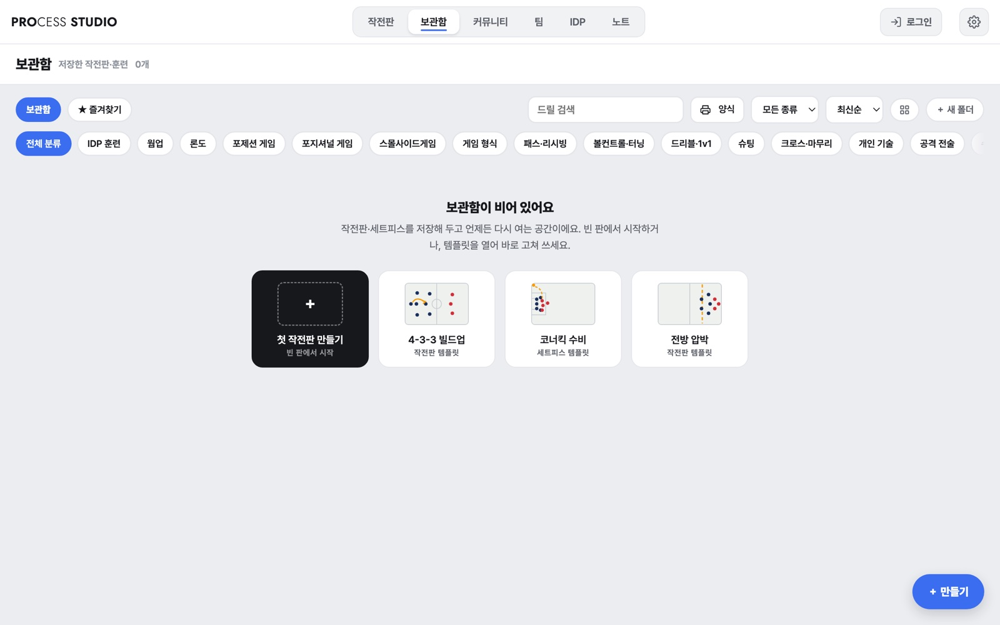
4-1. 정리하기
- 폴더 — [＋ 새 폴더], 항목 카드를 폴더 칩에 끌어다 이동. 경로 크럼브(보관함 › 폴더 › 하위폴더)로 탐색.
- 분류 21종 — IDP 훈련 · 웜업 · 론도 · 포제션 게임 · 포지셔널 게임 · 스몰사이드게임 · 게임 형식 · 패스·리시빙 · 볼컨트롤·터닝 · 드리블·1v1 · 슈팅 · 크로스·마무리 · 개인 기술 · 공격 전술 · 수비 전술 · 빌드업 · 전환·역습 · 세트피스 · 골키퍼 · 피지컬 · 펀 게임. 칩은 복수 선택.
- 검색 — 이름·#태그 문법(여러 단어는 AND). 검색 중엔 폴더 무시하고 전체에서 찾습니다.
- [★ 즐겨찾기] — 자주 쓰는 것 핀. 종류(훈련/작전판/미팅/세트피스)·정렬(최신/이름/종류) 필터, 리스트/그리드 전환.
4-2. 항목 카드
카드를 누르면 열립니다. 카드의 버튼과 ⋯ 메뉴:
[보기](읽기 전용) · [편집] · [복사](내 훈련으로) · [이동] · [제목 변경] · [PDF 저장] · [태그] · [분류] · [즐겨찾기] · [파일 내보내기(JSON)] · [공유 링크] · [삭제]
팀 워크스페이스에서 남이 만든 항목은 편집 대신 복사해서 내 것으로 만드세요("만든 사람만 편집할 수 있어요").
4-3. 처음이라면 — 템플릿 스타터
빈 보관함에는 [첫 작전판 만들기]와 템플릿 3종(4-3-3 빌드업 · 코너킥 수비 · 전방 압박)이 준비되어 있습니다. 열어서 바로 고쳐 쓰세요.
4-4. 양식 — 펜으로 쓰는 1장 폼 26종
보관함 헤더의 [양식] 버튼. 인쇄하거나 PDF로 저장해 클립보드에 끼우는 A4 폼입니다. 월간/주간/일간 양식, 매치데이, 경기 분석, 선수 분석 보고서, 상대팀 분석, 트레이닝 세션 플랜, 세트피스 시트, IDP, RPE·부하 로그, 하프타임 노트, 면담 기록, 부상 기록, 코넬 노트 등 — 전체 목록은 부록 A.
- 카드를 누르면 출력 미리보기가 뜨고 [잉크 절약] 토글 후 [인쇄 / PDF 저장].
- 기입한 내용이 채워진 출력(일정·라인업·시즌 리포트)은 일정·팀 탭 안의 출력 버튼에서 나옵니다.
- 같은 양식을 노트의 배경으로 불러와 펜슬로 직접 기입할 수도 있습니다(14장).
5장 팀 일정 — 주기화가 눈에 보이게
상단 내비 [팀] → 일정. 훈련·경기·휴식·강도를 채우면 앱이 부하와 국면 배분을 계산해 보여줍니다. 앱은 단정하지 않습니다 — 코치가 채우고, 앱은 사실(분·%·부하)만 비춥니다.
5-1. 처음 진입: 다음 경기까지 며칠?
처음 열면 "다음 경기까지 며칠?"을 묻습니다. −/＋ 또는 빠른 칩(3일/1주/4주/3개월/1년)으로 정하고 [훈련일정 짜기]. 이 D-day는 우상단 미니칩(D-〇 · 상대팀)으로 늘 보이고, 칩을 탭하면 대회·상대 이름과 함께 수정할 수 있습니다.
5-2. 월간 뷰 — 한 달을 한 눈에
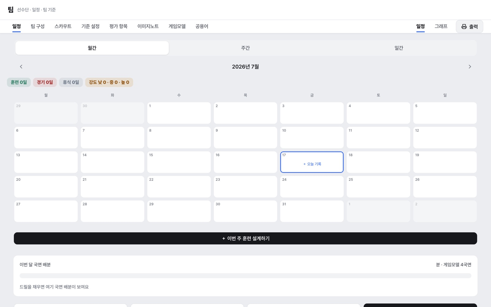
- 날짜 셀 탭 → 팝오버에서 [훈련][경기][OFF][미팅][빠른] 중 골라 제목 입력 후 [추가]. [자세히 ▸]는 주간 편집으로.
- 경기일은 빨강, OFF는 회색, 셀 상단 색 바는 그 날 훈련의 국면 색.
- 하단 이번 달 국면 배분 게이지 — 게임모델 4국면(공격 조직/전환/수비 조직/세트피스/비전술)이 분·%로 누적 표시됩니다.
- 액션바: [초기화] · [이달 복제] · [내 구성 저장] · [월간 PDF].
5-3. 주간 뷰 — 마이크로사이클 보드
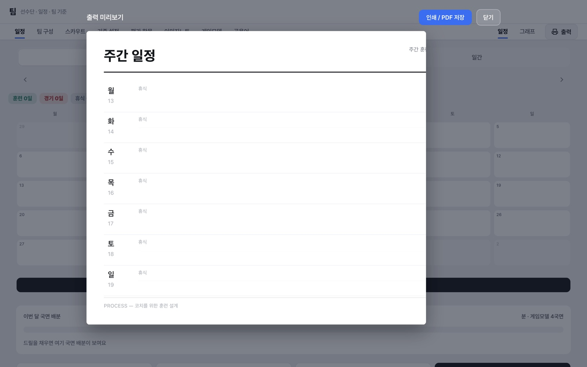
열=요일, 행=일정 / 주제 / 미팅 / 강도 / 웜업 / 훈련인 보드입니다.
- 일정 칸 ＋ — 훈련/경기/OFF 선택. 경기를 고르면 셀이 경기 셀로 병합되고 상대팀·로고를 넣습니다. OFF는 "휴식"으로 병합.
- 주제 칸 ＋ — 주제 팔레트: 기존 주제 선택, [＋ 새 주제](이름·색), 색 점 탭으로 색 변경, ✕ 삭제.
- 강도 칸 ＋ — RPE 슬라이더(1~10). 색은 강도 램프(파랑→회색→빨강).
- 미팅/웜업/훈련 ＋ — 여러 개를 쌓습니다. 항목마다 보관함 드릴 담기, [＋ 작전판에서 새로 그리기], 직접 입력. 담긴 항목을 탭하면 썸네일 미리보기 + [작전판에서 열기·수정] / [교체] / [삭제].
- 날짜 헤더 탭 — MD 설정: [자동](경기 위치에서 계산) 또는 [MD-5 ~ MD+3] 수동 고정, [MD · 경기]로 경기일 지정.
- 버튼 줄: [되돌리기 ↺](⌘Z, 60단계) · [팀·로고](팀 이름·로고 업로드) · [지난주 복사] · [이번 주 초기화].
- 하단 이번 주 국면 배분 게이지와 [초기화]·[이 주 복제]·[내 구성 저장]·[주간 PDF].
5-4. 일간 뷰와 훈련 편집

일간 뷰는 하루를 행 단위(일정/주제/미팅/강도/웜업/훈련)로 편집하고 [이 날 PDF]로 뽑습니다.
새 훈련은 2단계 위저드로 만듭니다:
- 국면·강도 — 경기일이 없으면 먼저 요일 지정을 권합니다. 오늘의 국면(공격/수비 축 + 어디서·어떻게 2축 선택기), 강도(RPE — MD별 권장 밴드 표시), 메모.
- 드릴 — 추천 드릴 칩, 블록 이름 입력 후 Enter, [블록 더하기], [보관함에서 담기].
기존 훈련을 탭하면 한 화면 편집: 시간·강도·메모·세부 설정(인원, 시간대 새벽/오전/오후/저녁, 국면, 게임모델 원칙 태그), 블록별 단계(웜업/보조/메인)·형식(론도/포지셔널/SSG/경기/패턴/개인기술/서킷)·분·설명·작전판 첨부. [세션 복제]도 여기서.
5-5. 빠른 채우기
- 퀵 플랜 — 월간 팝오버의 [빠른]: 주제(전술→빌드업/마무리/전환/세트피스, 기술, 체력, 회복) + 시간(60/75/90분) 고르면 웜업→메인→게임 3블록 훈련이 자동 생성됩니다(RPE는 MD 기반). 더 다듬으려면 [자세히 설계 ▸].
- MD 리듬으로 주간 채우기 — 경기일만 정하면 빈 날들을 MD별 표준 부하로 자동 채우고 미팅도 제안합니다.
- 내 구성 — 잘 짠 주를 [내 구성 저장]으로 템플릿화하고, 불러올 때 "빈 날에만 채우기 / 전체 바꾸기"를 선택.
5-6. 그래프와 시즌
[그래프] 탭: 세션 수·평균 부하·총 훈련분, 주별 부하 흐름(강도×시간), 요일별 부하, 훈련 배분, 이번 주 원칙 커버리지(게임모델 원칙 태그 집계). 시즌 섹션에서는 주차별 누적(막대를 탭하면 그 주로 이동, 경기 주는 빨강)과 [시즌 PDF].
[출력] 메뉴 — 월간 일정 / 주간 일정 / 주간 보드 / 오늘 일정 / 시즌 리포트를 각각 PDF로. 입력한 일정·라인업이 그대로 폼에 들어갑니다.
6장 선수단과 스카우트
[팀] 탭의 팀 구성 · 선수 · 스카우트 · 기준 설정 · 평가 항목.
6-1. 팀 구성 — 뎁스차트
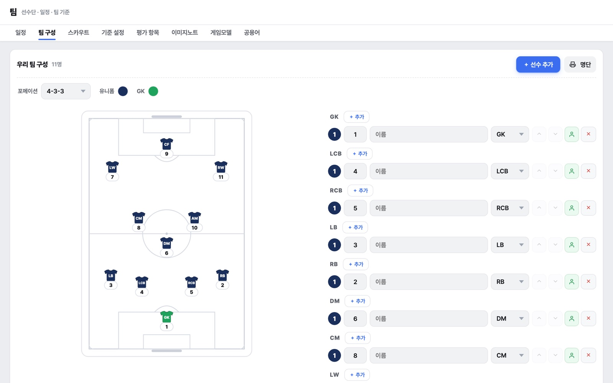
- 포메이션 셀렉트(백4 5종·백3 3종)를 고르면 포지션이 자동 배치됩니다. 유니폼/GK 색도 여기서.
- 피치의 빈 자리를 탭 — 그 포지션에 선수 추가(번호·이름 여러 명). [✎ 포지션 수정]으로 라벨을 LM·쉐도우·10번처럼 자유 변경.
- 오른쪽 뎁스차트: 포지션별로 선수를 쌓습니다. 깊이 번호를 탭하면 1순위(선발)로 승격, ▲▼로 순위 이동, 프로필 아이콘으로 상세 편집, ✕ 삭제.
- [명단] — 선수단 명단 PDF.
6-2. 선수 관리
선수 탭에서는 우리 선수단과 스카우트 대상을 2열로 관리합니다.
- 상태(훈련 가능/부상/회복 중/휴식)를 지정하면 상태 필터 칩으로 "오늘 누가 뛰나"를 바로 거릅니다. 작전판의 [팀 선수 불러오기]도 이 상태를 반영합니다.
- 명단 붙여넣기 — 엑셀·메모에서 번호 이름 포지션 텍스트를 붙여넣으면 여러 명이 한 번에 등록됩니다.
- 선수 편집 모달 — 사진, 인적 사항, 주발, 서브 포지션, 신체(키·몸무게·혈액형·MBTI), 경력, 성과, 하이라이트 영상 링크, 메모, 스카우팅 정보(관찰 경기수·이적 가능성·예상 비용), 그리고 속성 레벨(1~5 게이지) — [핵심만]/[전체] 토글로 포지션 핵심 속성만 빠르게 입력할 수 있습니다.
- [PDF] — 선수별 이력서 1장 + 세부평가 1장.
6-3. 스카우트 — 포지션 적합 비교
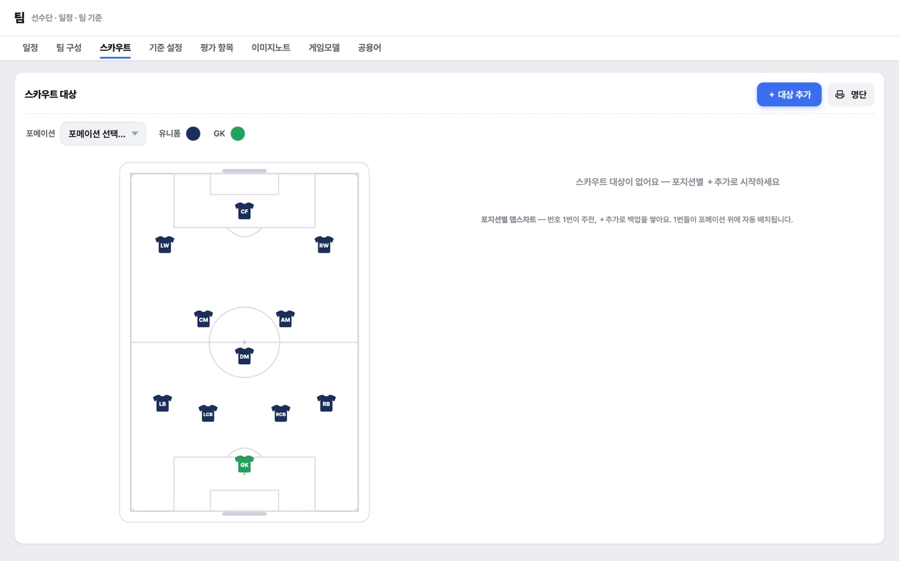
스카우트 대상을 포지션별로 쌓고, 기준 설정의 목표 레벨과 비교합니다.
- 판정: 충족(met) / 근접(near, 목표−1) / 미달(below). PDF 세부평가에서 ● 현재 · ○ 미달 · 파란 테두리=목표로 시각화되고 카테고리 평균이 표시됩니다.
- 추천 등급(강력 추천/추천/조건부 추천/보류/비추천) + 코멘트를 달아 이력서+세부평가 2장 PDF로 내보냅니다. 영입 추천서·선수 비교표 양식(부록 A)과 함께 쓰면 보고서가 완성됩니다.
6-4. 기준 설정 — 포지션별 목표 레벨
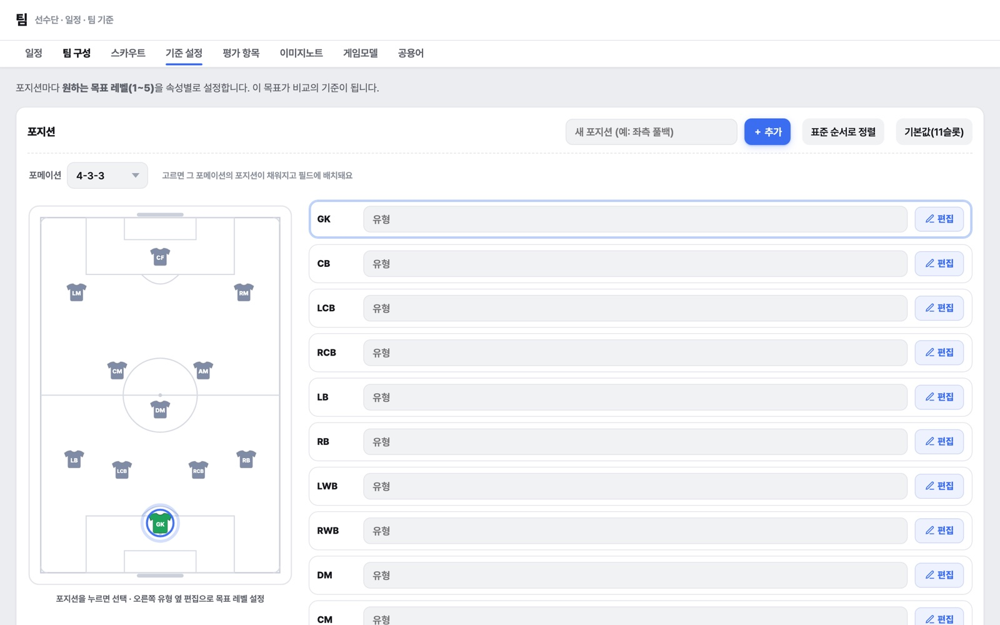
포지션마다 "이 자리에 원하는 수준"을 속성별 1~5로 정의합니다. 이것이 선수 평가·스카우트 비교의 잣대가 됩니다.
- 역할 프리셋(볼플레잉 CB, 스토퍼 CB, 홀딩 DM…)을 누르면 핵심 속성 목표가 자동으로 채워집니다.
- ★ 핵심 속성 토글, 속성 이름 수정, ▲▼ 순서, [표준 순서로 정렬], [기본값(11슬롯)].
- 팀 스타일 위저드(점유/역습/압박)로 전 포지션 역할을 일괄 적용할 수도 있습니다.
6-5. 평가 항목 — 우리 팀의 어휘
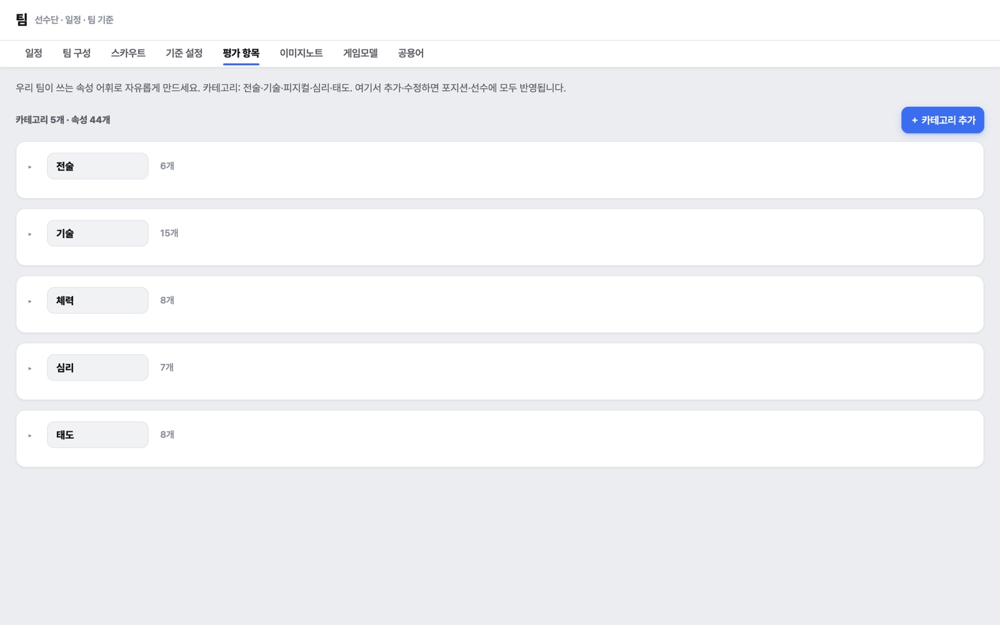
기본 5개 카테고리(전술/기술/체력/심리/태도)의 항목을 팀 언어로 고칩니다 — 카테고리 추가(예: 골키핑), 속성 추가·이름 수정·삭제. 여기서 바꾼 어휘가 선수 입력·기준 설정·선수의 IDP 셀프 평가에까지 전부 반영됩니다.
6-6. 코치 이미지노트
팀 탭의 이미지노트는 코치의 경기 전 리허설 노트입니다 — 게임플랜 / 예상 상황과 대응 / 벤치에서 볼 것 / 심리기술 전략 / 칭찬 및 각오. 경기마다 한 장씩 쌓입니다(개인 데이터, 팀 동기화 안 함).
7장 게임모델과 공용어 — 팀의 언어
7-1. 게임모델 — 우리 축구의 설계도
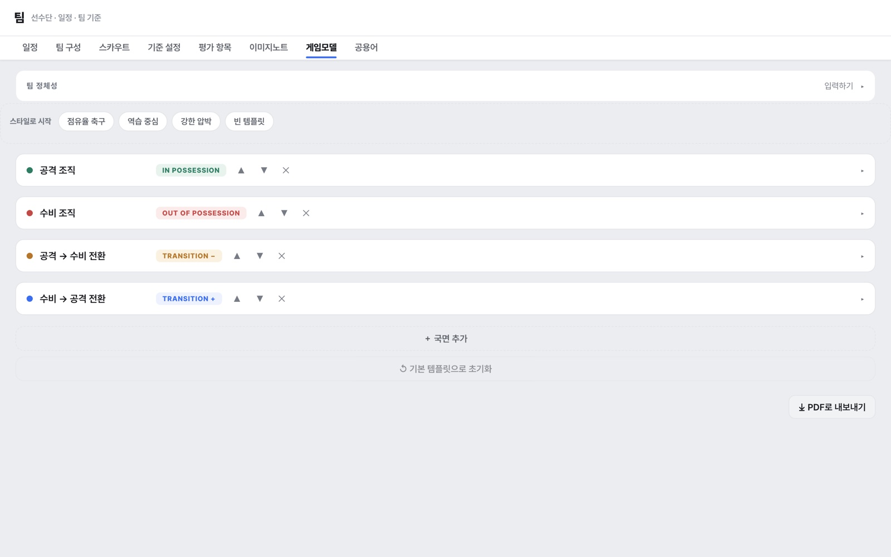
- 팀 정체성 — 우리 팀을 한 문장으로.
- 스타일로 시작 — [점유율 축구] [역습 중심] [강한 압박] 중 고르면 4국면이 실제 원칙으로 채워집니다. [빈 템플릿]은 골격만.
- 4국면 — 공격 조직(빌드업/전진·전개/침투·마무리), 수비 조직(전방 압박/미드 블록/로우 블록), 공→수 전환(역압박/후퇴·재정비), 수→공 전환(빠른 역습/점유 안정화). 국면·단계·원칙 모두 추가·수정·순서 변경·삭제가 자유롭습니다.
- 원칙 칩 — 자주 쓰는 원칙을 탭 한 번으로 추가(타이핑 없이). 트리거(신호) 체크리스트("예: 상대 백패스")도 국면마다.
- 작전판 첨부 — 원칙 옆에 작전판 장면 스냅샷을 붙이고 [▶ 보기]로 엽니다.
- [PDF로 내보내기] — 전 국면을 문서로. 미입력 원칙은 인쇄에서 자동 생략.
게임모델의 국면은 일정의 국면 배분 게이지, 훈련의 원칙 태그와 연결됩니다 — 설계도가 훈련량으로 검증되는 구조입니다.
7-2. 공용어 — 같은 말로 부르기
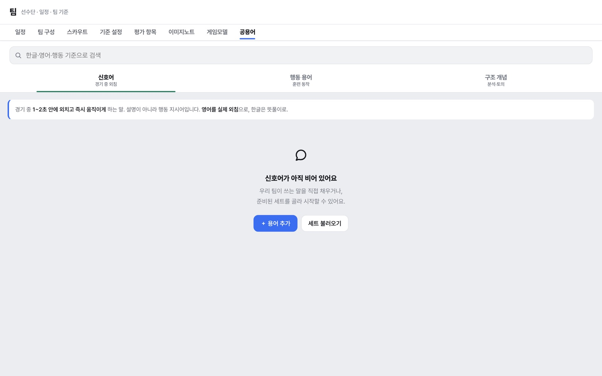
팀이 같은 상황을 같은 말로 부르게 하는 사전입니다. 3계층:
- 신호어 — 경기 중 1~2초 안에 외치고 즉시 움직이는 말(영어=실제 외침, 한글=뜻).
- 행동 용어 — 훈련·영상 분석에서 같은 이름으로 부르는 동작 단위.
- 구조 개념 — UEFA·FIFA 공통 경기 원칙·4국면·구역 등 분석·토의 언어.
[＋ 용어 추가]로 직접 쌓거나, [세트 불러오기]로 시작하세요: 핵심 스타터(~15개) · 국제 표준 UEFA·FIFA(~57개) · PROCESS+국제표준 통합(추천) · PROCESS 용어. 병합 시 중복은 건너뜁니다. 검색은 한글·영어·행동 기준 전체에서.
2부 선수 편 — IDP(개인 성장 계획)
상단 내비 [IDP]. 선수가 스스로 채우는 공간입니다. 로그인·팀 없이도 전부 쓸 수 있고, 팀에 합류하면 평가 항목이 팀 기준으로 바뀌고 코치가 내 IDP를 읽기 전용으로 볼 수 있습니다.
8장 시작 3단계
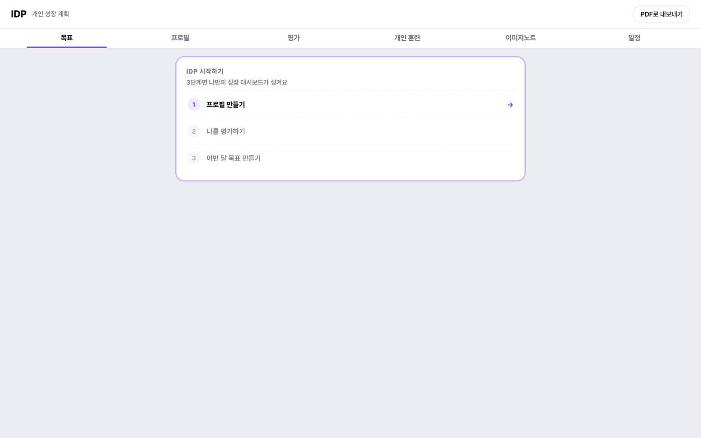
처음 열면 3단계 온보딩이 안내합니다: ① 프로필 만들기 → ② 나를 평가하기 → ③ 이번 달 목표 만들기.
8-1. 프로필
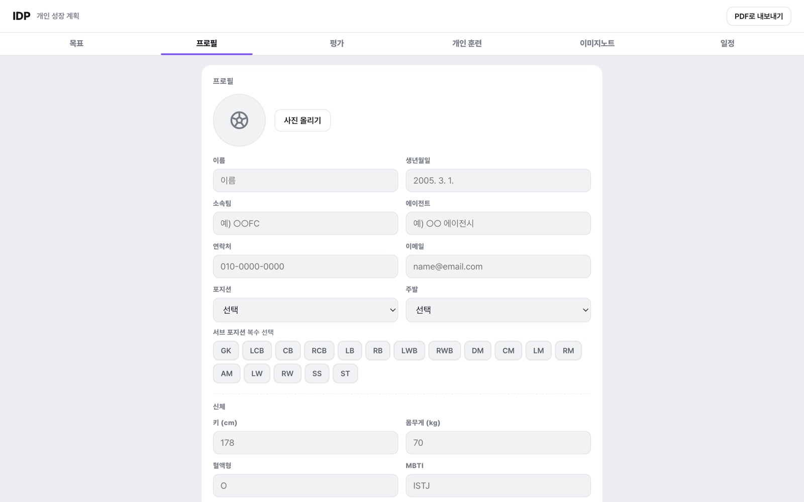
사진, 이름·생년월일·소속팀·포지션·주발, 서브 포지션, 신체(키·몸무게·혈액형·MBTI), 축구 경력, 주요 성과, 하이라이트 영상 링크까지 — 나의 축구 이력서입니다.
8-2. 셀프 평가 — 내가 보는 나
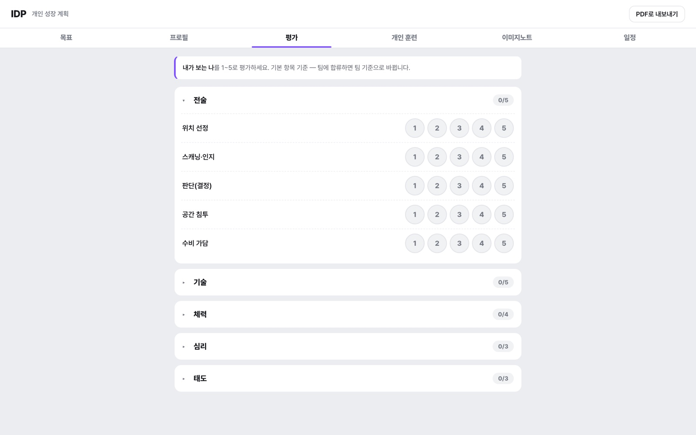
전술·기술·체력·심리·태도 카테고리를 펼쳐 항목마다 1~5를 누릅니다. 한 카테고리를 끝내면 접히고 다음으로.
- 능력 레이더 — 내 점수(실선)와 코치 평가(점선)를 겹쳐 봅니다. 코치 평가가 있으면 항목 옆에 파란 숫자로 병기.
- 성장선 — 평가를 저장할 때마다 그 날의 전체 평균이 이력으로 쌓여 변화가 보입니다.
8-3. 이번 달 목표
[＋ 이번 달 목표 만들기] — 보완할 속성을 1~2개 고르고, 내 훈련과 연결하고, 주당 횟수·주 수를 정합니다.
- 목표 카드에 히어로 숫자(실행 N/목표 M회)와 진행바, 시간 경과 눈금이 표시됩니다. 실행이 시간보다 뒤처지면 경고가 떠요.
- 연결한 훈련의 요일이면 "오늘은 하는 날"이 표시되고, 일정에서 완료를 체크하면 진행률이 올라갑니다.
- 4주가 끝나면 [리뷰하고 마무리] — 결과(↑늘었어 / →그대로 / ↓아쉬워)가 "지난 목표"에 쌓입니다.
- 시즌 시간표 — [＋ 시즌 시작]으로 1년을 걸어두면 경과 %와 남은 날이 늘 보입니다.
9장 개인 훈련과 일지
9-1. 내 훈련 만들기
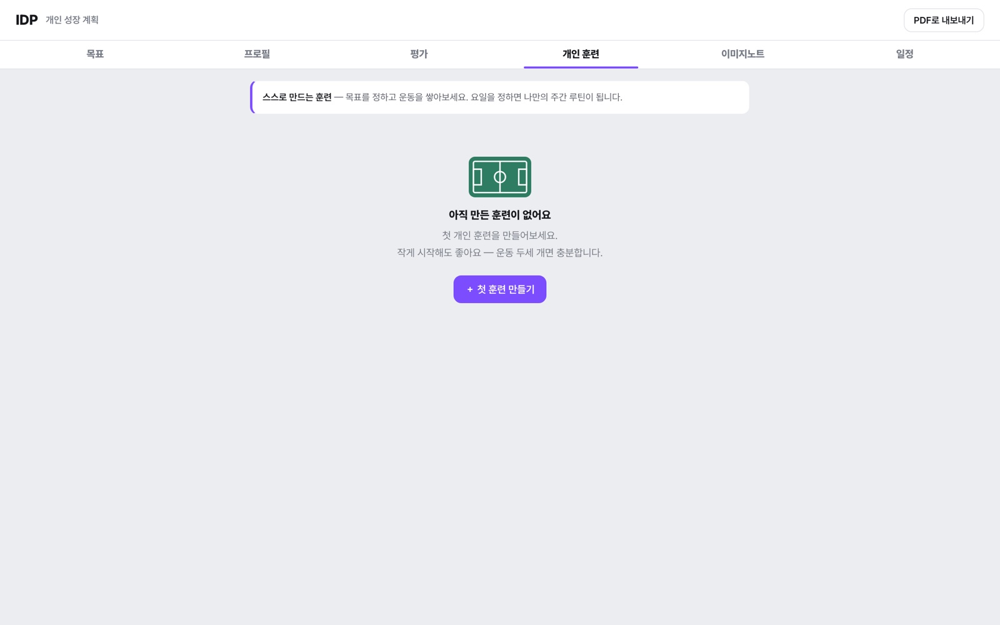
[＋ 훈련 만들기] — 제목·목표, 요일 칩(주간 루틴), 운동 목록(이름·세트·시간), 작전판 그림까지. 카드를 탭하면 언제든 수정.
9-2. 일정에 기록하기
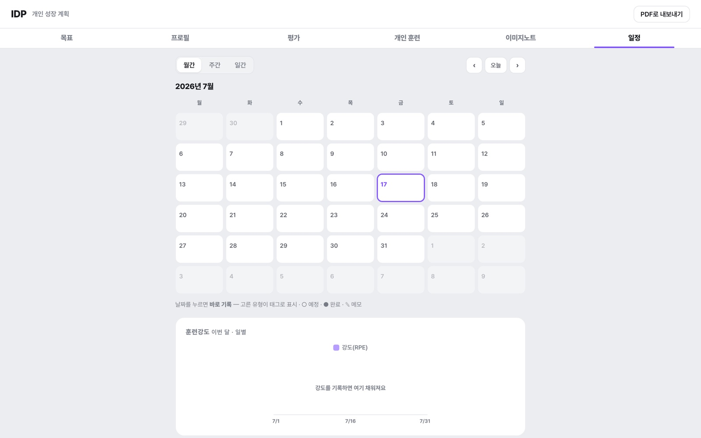
IDP의 일정 탭은 나의 훈련 달력입니다(월간/주간/일간).
- 날짜 탭 → 퀵 기록: 이 날은 [팀훈련/경기/휴식] + 개인운동 토글, 내 훈련 ✓ 완료 체크, 강도(RPE 0~10) 슬라이더, 몸무게(kg), 자유 기록.
- 주간 뷰에서는 유형 배지를 탭할 때마다 없음→팀훈련→경기→휴식으로 순환합니다.
- 연속으로 기록하면 스트릭(🔥) 배지가 붙고, 훈련강도 막대 + 몸무게 라인 그래프로 몸 상태 추이를 봅니다.
10장 이미지노트 — 경기 전에 그려보는 내 역할
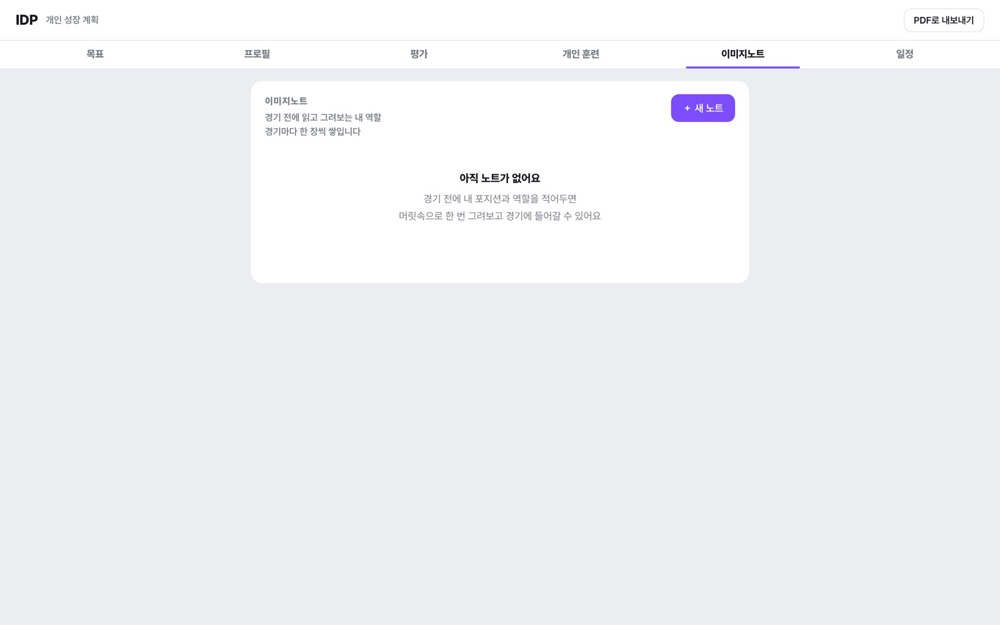
경기 전에 읽고 그려보는 내 역할 — 경기마다 한 장씩 쌓입니다. [＋ 새 노트]: 날짜/상대팀/포지션, 역할과 임무(수비 시/공격 시), 주의해야 할 것, 심리기술 전략, 칭찬 및 각오. 라커룸에서 한 번 읽고 들어가는 용도입니다.
11장 리포트 — PDF로 내보내기
우상단 [PDF로 내보내기]:
- [전체 리포트] — 프로필·목표·평가·이번 달 기록·개인 훈련 전부.
- [이력서] — 1장, 영상 링크 클릭 가능. 진학·입단 제출용.
- [세부평가] — 카테고리 점수 시트(A4 가로 자동 전환).
- [목표] — 이번 달 + 지난 목표 전체.
인쇄 창에서 'PDF로 저장'을 고르면 파일이 됩니다. 파일명은 "이름_유형_날짜"로 자동.
3부 팀 편 — 함께 쓰기
12장 팀 워크스페이스
12-1. 팀 만들기와 초대
- 계정 패널(로그인 후) → [＋ 팀 만들기] — 팀 이름을 정하면 그 팀 전용 보관함·일정·팀명단이 생깁니다.
- [초대 코드 만들기] — 역할을 고르는 과정 없이 선수 합류용 8자리 코드가 발급됩니다(30일간 동일 코드 유지). [코드 복사]해서 단톡방에 공유.
- 팀원은 먼저 팀에서 구분할 이름 또는 아이디를 반드시 입력하고, [코드로 합류]에 초대 코드를 넣으면 선수 역할로 합류합니다.
- 코칭스태프나 임원으로 바꿔야 하는 팀원은 합류 후 관리자가 [권한 관리]에서 역할을 변경합니다.
- 코드가 새면 [새 코드 생성] — 기존 코드는 즉시 무효화됩니다.
개인 공간은 따로입니다. 계정 패널의 워크스페이스 목록에서 내 워크스페이스와 팀들을 오가며, 개인 데이터와 팀 데이터는 섞이지 않습니다. 개인 노트·IDP는 워크스페이스에 종속되지 않고 나를 따라다닙니다.
12-2. 역할과 권한
역할은 관리자(owner/admin) / 코칭스태프 / 선수 3가지, 편집 구역은 6개(작전판·보관함 / 일정 / 팀 / 게임모델 / 공용어 / 노트)입니다.
- 관리자 = 전체. 코칭스태프 = 기본 전체(구역별로 좁힐 수 있음). 선수 = 기본 보기 전용(필요한 구역만 열어줄 수 있음).
- 권한이 없는 구역은 노란 자물쇠 배너("편집 권한이 없어 보기 전용입니다")가 뜨고 편집 버튼이 숨겨지며 저장되지 않습니다.
- [권한 관리]에서 멤버별 역할·구역과 "새로 합류하는 팀원 기본 역할"을 정합니다. 선수 멤버는 팀 탭의 선수와 연결할 수 있습니다.
- 선수는 권한과 무관하게 자기 IDP는 항상 자유롭게 쓰고, 코치는 선수 선택 메뉴로 각 선수의 IDP를 읽기 전용으로 열람합니다.
12-3. 동기화를 믿는 법
- 자동: 앱 시작 시 · 3분마다 · 앱 전환/복귀 시 · 온라인 복귀 시 · 편집 4초 후. 수동: [지금 동기화].
- 상태 배지: "동기화 완료 · 시각" / "동기화 중…" / "오프라인 — 연결되면 자동 동기화" / "일부 미동기화"(용량 큰 항목 이름 안내).
- 운동장에 와이파이가 없어도 걱정 없습니다 — 전부 기기에 먼저 저장되고, 돌아와서 자동으로 올라갑니다.
12-4. 공유 링크 — 팀 밖으로 보내기
상단 [공유] 버튼은 지금 보는 화면(작전판 배치·드릴·주간 일정)을 링크 하나로 만들어 클립보드에 복사합니다. 받은 사람은 로그인 없이 열람하고, [내 작전판으로 불러오기]로 가져갈 수 있습니다. 내용이 너무 크면 파일 내보내기(JSON)를 쓰라고 안내합니다.
13장 커뮤니티 — 코치들의 훈련 공유
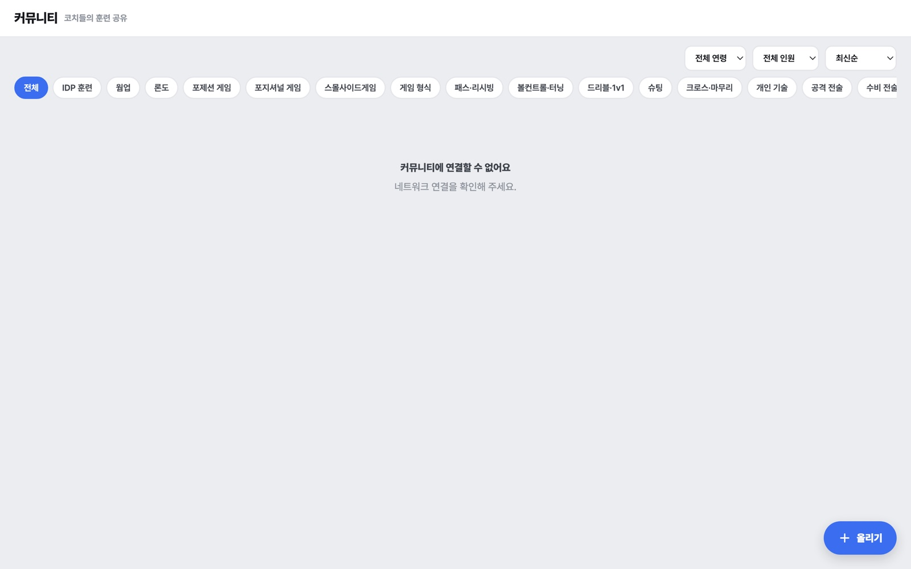
상단 내비 [커뮤니티]. 다른 코치들이 올린 훈련을 구경하고 담는 곳입니다.
- 구경·담기는 로그인 없이, 올리기·좋아요는 로그인 후.
- 필터: 분류 칩 20종(복수 선택) + 연령(U8~성인) + 인원(개인~팀 13명+) + 정렬(최신/조회/좋아요/많이 담긴 순).
- 카드를 열면 작전판 보기 전용으로 장면·애니메이션이 재생됩니다. [📥 내 보관함에 담기] — 복사되어 내 것이 됩니다(보관함 탭에서 확인).
- [＋ 올리기] — 내 보관함에서 훈련을 골라 분류·제목·연령·인원을 붙여 게시. 처음 올릴 때 커뮤니티 아이디(@핸들)를 한 번 만듭니다(2~16자, 중복 불가). 사진은 자동 제거되어 올라갑니다.
- 문제 게시물은 [신고], 내 게시물은 [삭제].
14장 노트와 메모 — 손으로 적는 훈련 메모
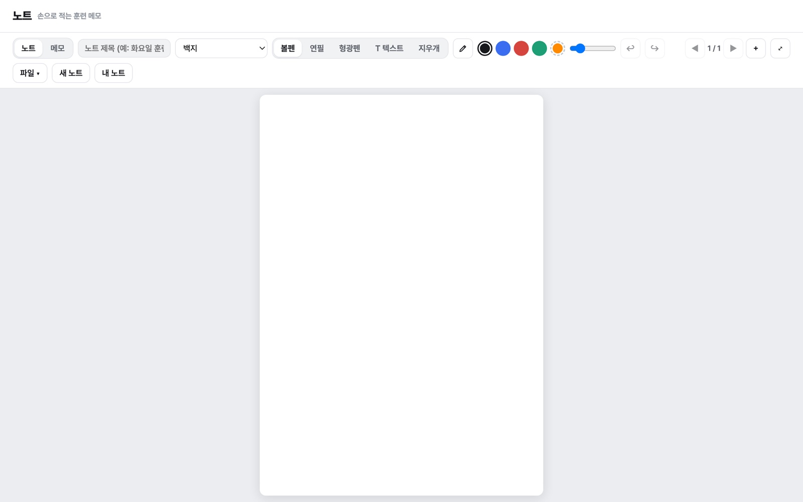
상단 내비 [노트]. 아이패드 + 애플펜슬에 최적화된 손글씨 노트입니다.
14-1. 쓰기
- 도구: 볼펜(필압·속도 반응) / 연필(반투명 질감) / 형광펜(파스텔 자동 매핑) / T 텍스트(탭한 자리에 타이핑, −/＋ 크기, 드래그 이동) / 지우개(획만 지움).
- 색 4종 + 직접 색 선택, 도구별 굵기 기억, ↩↪ 실행취소.
- 펜 전용 버튼 — 손바닥을 화면에 대도 손가락 입력을 무시합니다(펜슬 감지 시 자동 켜짐).
- 페이지: ◀▶ 넘기기, [＋ 페이지 추가], [⤢ 가로/세로 전환].
14-2. 배경 양식
[배경 양식] 드롭다운 — 백지/줄노트/모눈/축구장(실측 풀피치) 4종 기본에:
- [＋ 양식에서 가져오기] — 보관함의 A4 양식 26종을 배경으로. 인쇄 없이 펜으로 바로 기입하고, 월간 양식은 늘 이번 달로 나옵니다.
- [＋ 양식 직접 만들기] — 블록 조립식 빌더(제목·메타칸·운동장·글상자·표·체크 블록을 쌓고 드래그 정렬, A4 사용량 % 실시간 표시). 데스크톱·아이패드 전용.
- [＋ 양식 추가 (이미지)] — 내 이미지 파일을 양식으로 등록.
14-3. 파일과 목록
- [파일 ▾] — [PDF 열기](기기 PDF를 배경으로 불러와 그 위에 필기, 최대 20쪽, 인터넷 필요) / [이미지 저장](현재 페이지 PNG) / [A4 인쇄](전 페이지, PDF 저장 가능).
- [내 노트] — 저장된 노트 목록(제목·날짜·페이지 수), 열기·삭제. [새 노트]로 새로 시작.
14-4. 메모 모드
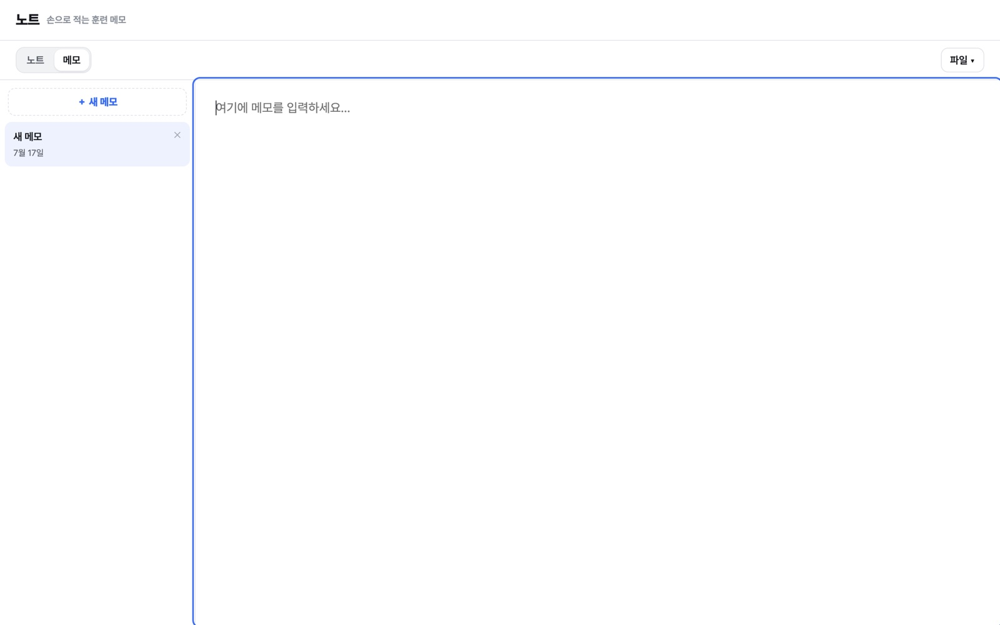
상단 [노트|메모] 세그로 전환하는 텍스트 메모장입니다. 첫 줄이 제목이 되고, 400ms마다 자동 저장됩니다. 회의록·전달사항처럼 타이핑이 빠른 내용은 여기에.
15장 한 주 루틴 예시 — 셋이 맞물리는 흐름
토요일 경기(MD)가 있는 U15 팀의 일주일입니다.
| 요일 | 코치 | 선수 | 팀 |
|---|---|---|---|
| 일 (MD+1) | 일정에 회복 세션·강도 3 입력, 경기 후 리뷰 양식 기입 | 퀵 기록: 경기 완료·RPE·몸무게 | — |
| 월 (MD-5) | 주간 보드에 주제·훈련 설계(퀵 플랜 75분), 게임모델 원칙 태그 | 이미지노트 지난 경기 복기 | 코치가 [주간으로 보내기]한 세션 공유됨 |
| 화 (MD-4) | 현장 모드로 세션 진행, 노트에 관찰 메모 | 개인 훈련 ✓ 완료 체크 | 작전판 공유 링크로 훈련 영상 GIF 단톡 전달 |
| 수 (MD-3) | 스카우트 대상 관찰, 선수 분석 보고서 양식 | 셀프 평가 갱신(성장선 기록) | — |
| 목 (MD-2) | 미팅 모드로 상대 분석 발표(분류: 공격·수비·전환·세트피스) | IDP 이미지노트에 내 역할 작성 | 미팅 자료가 보관함에 저장 |
| 금 (MD-1) | 세트피스 드릴 편집, 매치데이 양식 인쇄 | 가볍게 개인운동 기록 | 일정의 국면 배분 게이지로 주간 점검 |
| 토 (MD) | 경기 모드: 전광판·득점 기록·경기 메모 | 라커룸에서 이미지노트 읽기 | 득점 기록 [복사] → 단톡 공유 |
이 흐름의 핵심: 게임모델(설계) → 일정(계획) → 작전판·훈련(실행) → 그래프·평가(확인)이 한 앱 안에서 순환하고, 선수의 IDP가 팀 기준과 연결된다는 것입니다.
부록
부록 A. 양식 26종 전체 목록
| # | 양식 | 용도 |
|---|---|---|
| 1 | 월간 양식 | 이번 달 달력 + 기입 칸 |
| 2 | 주간 양식 | 월~일 7칸 괘선 |
| 3 | 일간 양식 | 하루 훈련 + 코칭 메모 |
| 4 | 매치데이 양식 | 라인업 피치 + 교체·세트피스 |
| 5 | 경기 분석 | 피치 2개 + 국면별 라인(가로) |
| 6 | 선수 분석 보고서 | 기술·전술·피지컬·멘탈 평가 |
| 7 | 상대팀 분석 | 핵심선수·강약점·대응전략 |
| 8 | 경기 관전 리포트 | 전·후반 메모 + 종합평가 |
| 9 | 트레이닝 세션 플랜 | 드릴 구성·코칭포인트·부하 |
| 10 | 경기 후 리뷰 | 잘된 점·개선점·국면별 |
| 11 | 세트피스 시트 | 배치 도식·역할·1·2차볼 |
| 12 | 개인 발전 계획(IDP) | 강점·목표·실행 계획 |
| 13 | RPE·부하 로그 | 주간 시간·RPE·부하 |
| 14 | 피치 다이어그램 | 빈 풀피치 + 메모 |
| 15 | 시즌 플랜 | 목표·시기구분·월별 중점 |
| 16 | 주간 트레이닝(MD) | MD-4~MD 일자별 계획·부하 |
| 17 | 경기 전 미팅 | 게임플랜·상대 키포인트·역할 |
| 18 | 하프타임 노트 | 관찰·유지·변경·개인 지시 |
| 19 | 코치 셀프 리뷰 | 준비·소통·판단 자기평가 |
| 20 | 시즌 평가 카드 | 출전기록·평가·성장 요약 |
| 21 | 면담 기록 | 주제·의견·피드백·합의 |
| 22 | 부상 기록 | 개요·재활 경과·복귀 기준 |
| 23 | 코넬 노트 | 키워드+노트+요약 구조 |
| 24 | 모눈/괘선 | 5mm 모눈 자유 메모 |
| 25 | 영입 추천서 | 적합성·리스크·추천 등급 |
| 26 | 선수 비교표 | A·B·C 항목별 비교 |
부록 B. 제스처·단축 조작 모음
작전판
- 드래그 = 이동(모바일은 길게 눌러 이동) · 탭 = 선택 · 더블탭 = 선택+이름 편집 · Shift/⌘+탭 = 다중 선택
- 화살표 가운데 점 드래그 = 곡선 · 경로 더블탭 = 직선 복원
- ⌘Z 되돌리기 · Delete 선택 삭제 · 팀 칩 한 번 더 탭 = 팀 색 변경
- 경기 모드: 점수 박스 탭 = +1 · 명단에서 필드로 드래그 = 투입
일정(팀)
- 월간 날짜 셀 탭 = 추가 팝오버 · 날짜 헤더 탭 = MD 설정 · D-day 칩 탭 = 경기 설정 · ⌘Z 되돌리기(60단계) · 보드 셀은 바로 타이핑
팀 구성·스카우트
- 피치 빈 자리 탭 = 선수 추가 · 토큰 탭 = 명단 포커스 · 뎁스 번호 탭 = 1순위 승격 · 속성 게이지 드래그/화살표키 · 명단 텍스트 붙여넣기 = 일괄 등록
IDP
- 달력 날짜 탭 = 퀵 기록 · 주간 유형 배지 탭 = 팀훈련→경기→휴식 순환 · 평가 숫자 탭 = 1~5
보관함
- 카드를 폴더 칩에 드래그 = 이동 · 검색에 #태그 · 페이지/훈련/드릴 탭 드래그 = 순서 변경
모바일 화면 — 폰에서는 하단 탭바로 전환합니다.
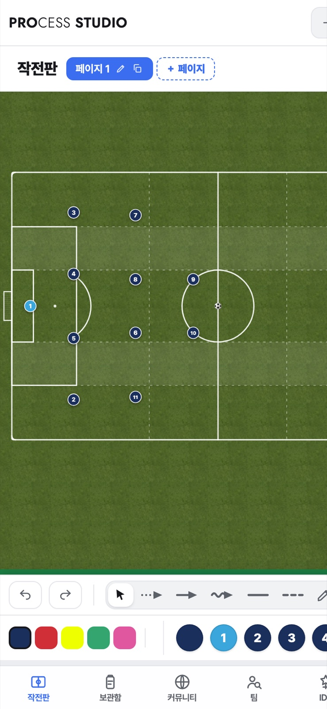
부록 C. 문제 해결
| 증상 | 해결 |
|---|---|
| 설치 버튼이 안 보여요 | 새로고침 후 잠깐 사용하고 다시 확인. iOS는 Safari 공유 → 홈 화면에 추가 |
| 태블릿에서 화면이 잠겼어요 | 세로 방향입니다 — 가로로 돌리세요 |
| "보기 전용"이라고 떠요 | 그 구역 편집 권한이 없습니다. 팀 관리자에게 [권한 관리]에서 열어달라고 요청 |
| 동기화 실패 | 네트워크 확인 후 계정 패널의 [지금 동기화]. 오프라인 편집분은 연결되면 자동 반영 |
| "일부 미동기화" | 용량 큰 항목이 이 기기에만 있습니다 — 필요하면 JSON 내보내기로 전달 |
| 저장 공간 가득 | 설정 → 백업 내보내기 → 저장 공간의 안전 정리. 그래도 부족하면 표시되는 큰 항목을 확인 |
| 팀에 자료가 안 보임 | 보관함 카드의 더보기 → 팀 스페이스에 공유. `☁ 팀 공유본` 표시 확인 |
| 데이터가 사라질까 걱정돼요 | 로그인 또는 설치 + 주 1회 백업 내보내기. "지금까지 쓴 내용은 로그인해도 그대로" |
| 공유 링크가 안 만들어져요 | 내용이 너무 큽니다 — [파일 내보내기(JSON)] 사용 |
| 노트에서 PDF 열기가 안 돼요 | PDF 열기만 인터넷이 필요합니다(그 외 노트 기능은 오프라인 가능) |
| 새 버전이 안 떠요 | 상단 [다시 시작] 버튼 확인, 없으면 앱을 완전히 닫았다 다시 열기 |
| 로그인 연결 시간이 지났어요 | 작업은 이 기기에 보존됩니다. 화면의 Google/카카오 다시 로그인 버튼을 누르세요 |
PROCESS STUDIO 사용 설명서 — 2026-07-17 기준(build 0717k). 기능이 추가되면 이 책도 갱신하세요.